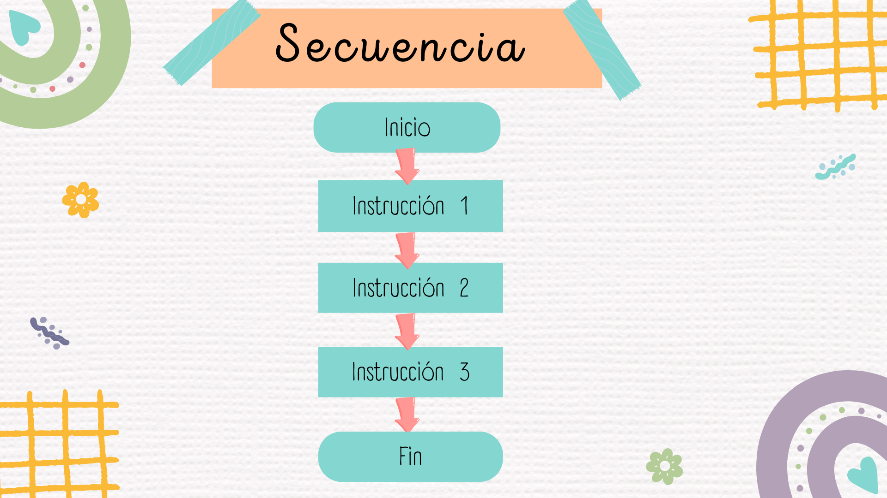

Comenzamos con un repaso
Repaso de algoritmo
Un algoritmo es un conjunto de instrucciones o pasos ordenados y finitos que permiten solucionar un problema o cumplir un objetivo.
Hasta ahora los algoritmos que vimos consisten en una lista de instrucciones que se ejecutan en forma secuencial.
¿Qué es una secuencia?
Una secuencia es la ejecución ordenada de instrucciones, una tras otra, tal como fueron escritas.